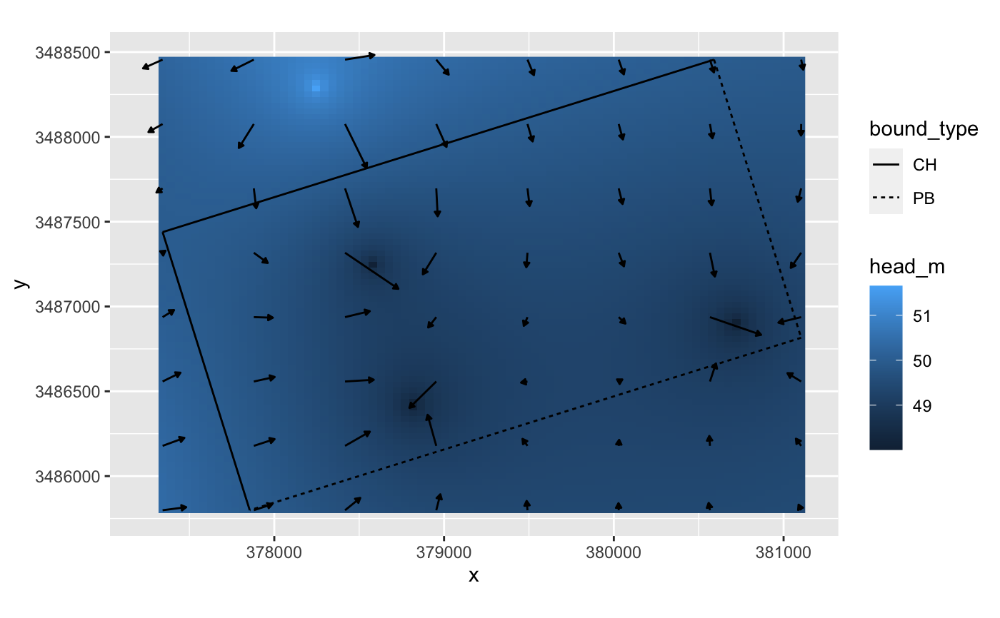

import_app_rds.RdImport rds output from anem-app
import_app_rds(path, params = NULL, gen_well_images = TRUE)
| path | Path to rds file downloaded from web |
|---|---|
| params | List objected loaded from the rds files |
| gen_well_images | Boolean value. If |
Returns a list containing aquifer, wells, and particles that
were input into the web application.
The rds files downloaded from the web application contain the raw data and map click information needed for the app. This function converts those raw values to UTM coordinates for processing with the R package.
Either path or params should be supplied to the function. If both
are specified, only path will be used.
# using built in package data app <- import_app_rds(params=anem_app_scenario)#>#>#>#>#># using RDS file file <- tempfile("anem_app_scenario.rds") saveRDS(anem_app_scenario,file) app <- import_app_rds(file)#>#>#>#>#>#' # view the data gridded <- get_gridded_hydrodynamics(app$wells,app$aquifer,c(80,80),c(8,8)) library(ggplot2) ggplot() + geom_raster(data=gridded$head,aes(x,y,fill=head_m)) + geom_segment(data=gridded$flow,aes(x,y,xend=x2,yend=y2), arrow = arrow(ends="last",type="closed",length=unit(1,"mm")),color="black") + geom_segment(data=app$aquifer$bounds,aes(x1,y1,xend=x2,yend=y2,linetype=bound_type)) + coord_equal()